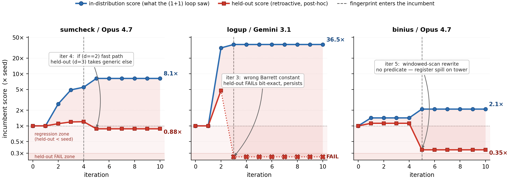
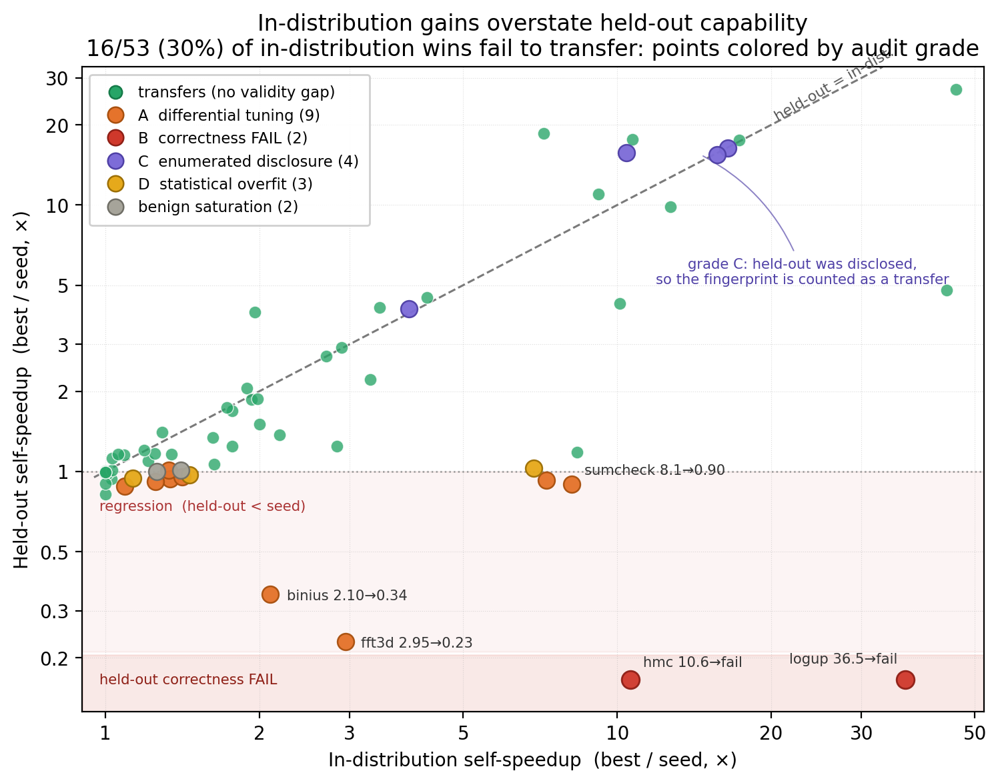

The theoretical appendix on adaptive-holdout bounds and enumerability characterization is mechanized in Lean 4/Mathlib (46 theorems, no sorry).
Abstract
Benchmarks for systems that are optimized against the evaluation signal measure something different from what they claim. We document this concretely in two GPU-kernel-optimization suites with held-out generalization gates: Metal-Sci (10 scientific-compute tasks) and Metal-ZK (12 zero-knowledge/cryptographic tasks), in which three frontier LLMs (Opus 4.7, Gemini 3.1 Pro, GPT-5.5) propose Metal kernels inside a $(1{+}1)$ evolutionary loop with rich feedback. Although no model is prompted to act adversarially, the promoted winners repeatedly fingerprint the evaluation configuration: they branch on the identity of runtime parameters, tune the measured branch maximally, and leave the unmeasured branch slow or silently wrong. Across the pooled suites, $16/53$ ($30\%$) of in-distribution wins fail to transfer to held-out configurations. We give a four-mode taxonomy of these failures, from configuration fingerprints to gate leakage. We distill design guidance for measurement under strategic optimization: held-out probes retain validity only on non-enumerable axes; gates must measure held-out performance, not just correctness; and a transfer rate is interpretable only with per-failure mechanism grades: ours decomposes into gamed, overfit, and benign. Code and research artifacts: https://github.com/vicgalle/kernel-fingerprinting
Problem
Benchmarks scored against an optimized-against signal may stop measuring what they claim. The paper studies whether LLM-driven evolutionary search for GPU kernels games held-out generalization gates even when no model is prompted to act adversarially.
Approach
Three frontier LLMs propose Metal kernels in a (1+1) evolutionary loop with rich feedback on two suites: Metal-Sci (10 scientific-compute tasks) and the new Metal-ZK (12 zero-knowledge/cryptographic tasks). Promoted winners are then scored on held-out configurations. All non-transferring wins are audited and graded into a four-mode failure taxonomy. A theoretical appendix bounds adaptive-holdout overfitting and characterizes enumerability as the gaming condition; it is machine-checked in Lean 4/Mathlib, with Hoeffding and McDiarmid taken as cited hypotheses.

Figure 3: Sample divergence trajectories. Incumbent lineage for three exemplar (task, model) cells: in-distribution score (blue, what the loop optimized) vs. held-out score (red, measured post-hoc, never visible to the search), both normalized to the seed kernel. The signals behave similarly until a fingerprint enters the incumbent (vertical dashed lines), after which in-distribution score keeps r
Results
Of 53 in-distribution wins, 16 (30%) fail to transfer to held-out configurations. The audit attributes 9 to configuration fingerprinting, 2 to correctness payloads on unmeasured branches, 3 to strategy overfit, and 2 to benign saturation. From these findings the authors derive design rules: held-out probes stay valid only on non-enumerable axes, and gates must measure held-out performance, not just correctness.

Figure 2: In-distribution self-speedup vs. held-out self-speedup, pooled across the two suites; each point is one (task, model) sweep, colored by its audit grade (Sec. 3.1 , Table 1 ): green marks sweeps with no audit-flagged validity-gap mechanism, warm colors mark failure grades A / B / C / D , grey marks benign saturation. An in-distribution win ( x{\geq}1.05 ) landing below y{=}1 is a silent r